01 · Vòng xuyến · theo ảnh chạy thật

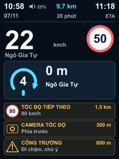
Số 4 nằm giữa lòng vòng xuyến; tốc độ tiếp theo 80 không bị diễn giải là yêu cầu hạ xuống 80.
Ngày 07/11/2026 · Chỉ cập nhật demo sau phản hồi chạy thật. Chưa sửa firmware hoặc xuất .bin mới. Ảnh có kích thước 240×320; font và nét SVG được rasterize trực tiếp ở kích thước đích. Chất lượng font trên firmware chỉ được xác nhận khi thay bộ glyph thực và kiểm tra trên board.
Header: trái = giờ + loa/mức âm lượng, dưới = ngày; giữa = khoảng cách còn lại / thời gian còn lại; phải = giờ đến dự kiến / ETA. Khi không có ETA thì bên phải hiện trạng thái BLE. Bỏ tên chế độ và toàn bộ hướng dẫn cố định dưới màn hình. Đầu mũi tên làn lớn hơn, thân cong bo tròn.
Có làn: 2 cảnh báo + số lượng còn lại. Không có làn: 3 cảnh báo. Chạy tự do: tối đa 5 cảnh báo. Không tự xoay vòng cảnh báo khiến người lái phải đợi đọc.

Số 4 nằm giữa lòng vòng xuyến; tốc độ tiếp theo 80 không bị diễn giải là yêu cầu hạ xuống 80.
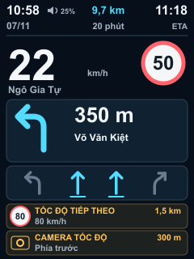
Mũi tên làn cao hơn, nét cong và đầu mũi tên tròn; vùng cảnh báo giữ hai hàng.
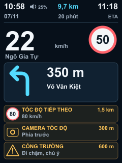
Bỏ toàn bộ ETA và hướng dẫn ở chân màn hình, lấy chỗ cho ba cảnh báo.
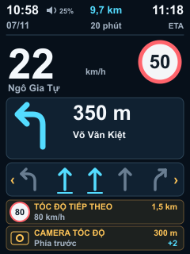
Giữ tối đa năm làn đủ lớn; hai thẻ cảnh báo, +2 báo số cảnh báo ngoài vùng nhìn.
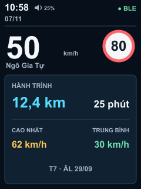
Header trái là giờ, loa và ngày; bên phải mới hiện BLE khi không có ETA.
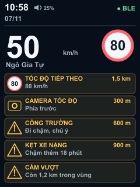
Dành tối đa năm hàng cho cảnh báo, không lặp ngày giờ giữa màn hình.
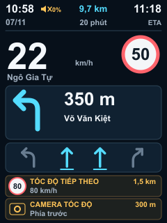
Icon loa gạch chéo và 0%; cảnh báo thị giác vẫn còn.
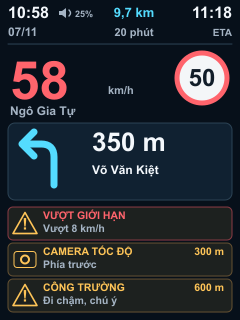
Đỏ dành cho cảnh báo hiện tại; tốc độ tiếp theo không bị tô như một yêu cầu giảm tốc.
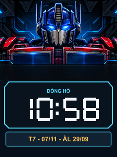
Bỏ chữ hướng dẫn ở đáy. Đây là bản minh họa bố cục, giờ và lịch sẽ là dữ liệu động.
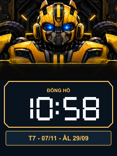
Vẫn giữ cả hai nhân vật; không thay đổi quy tắc chọn nhân vật trong lượt review.
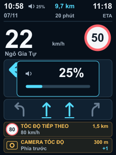
Panel chỉ hiện mức âm lượng và thanh mức, không lặp hướng dẫn thao tác.
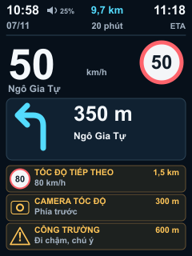
Ví dụ: xe đang 50, biển hiện tại 50, biển sắp tới 80 ở 1,5 km. Ba khái niệm hiển thị riêng.